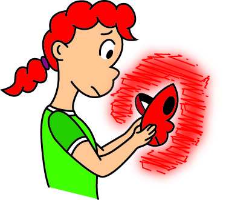

About
Ever wanted a website where you can find any new or old indie animated series? Well that's what Indie AniFind is here to help with.
Ever wanted a website where you can find any new or old indie animated series? Well that's what Indie AniFind is here to help with.